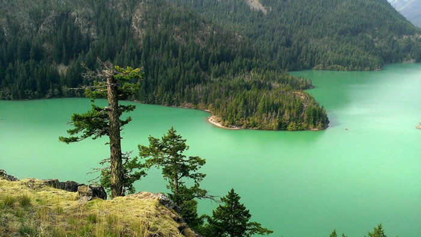
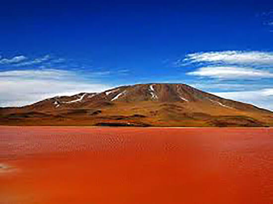
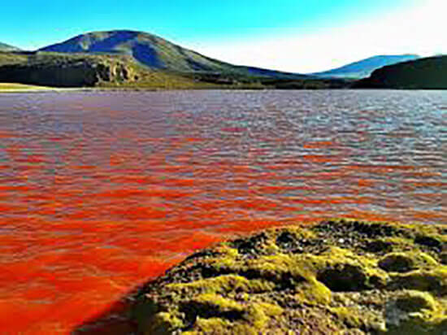
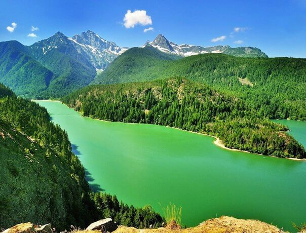

Только здесь можно одновременно увидеть самое засушливое место в мире и ледники, познакомиться с культурой древних цивилизаций (рассказывает МИРОВЕД).
Чтобы познакомиться со всеми достопримечательностями этой необычной страны, мало будет и одной недели. Остров Пасхи, Мраморные пещеры, резиденция президента, национальный парк Торрес-дель-Пайне, город – призрак Хамберстоун, гейзеры и лунная пустыня… Всего и не перечислишь. Да и стоит ли? На все это надо смотреть собственными глазами. Стоит всего лишь один раз побывать в этой стране, и полюбишь ее на всю жизнь.

«Страна поэтов» - так называют Чили местные жители. Действительно, красота и необычность природы этого края вдохновляет на создание красивых поступков и великих произведений. Самая длинная страна находится сразу на трех континентах: Антарктиде, Океании и в Южной Америке. Путешествовать по этому загадочному краю можно абсолютно в любое время года: здесь одновременно можно позагорать на пляжах, и спуститься с горы на лыжах.
А сколько загадок и тайн хранит эта экзотическая страна!
Одной из загадок природы, несомненно, остается Красная Лагуна на севере Чили. Хотя Лагуна находится недалеко от Резервуара Каритая, куда ежегодно направляются тысячи туристов, об этом загадочном месте стало известно лишь в 2009 году.
Что же такого необычного и загадочного хранится в водах этого озера? Дело все в том, что вода в нем очень необычного цвета. Она скорее больше походит на кровь или чернила, настолько она красная.

Но, почему так долго ничего не было известно об этом странном месте, кто все это время хранил тайну Красной Лагуны? Эта часть Чили издавна населена древней цивилизацией и аймарской культурой. Народ аймара живет высоко в горах, большинство из них проживает на высоте 1700 - 4200 м над уровнем моря. Красная лагуна находится на высоте 3,700 м. Это еще одна причина того, что никто не знал о существовании этого озера.
Экологи утверждают, что такой необычный цвет воды связан с водорослями, которыми покрыто дно водоема.

Местное население же считает, что озером владеет сам Дьявол. Именно с Красной Лагуной связано проклятие аймарского народа. Считается, что те, кто близко приближается к водам Лагуны, неизбежно пропадают. Тысячи индейцев айрама пропали именно потому, что пили из вод этого страшного озера. Именно поэтому Красная лагуна не отмечена не на одной карте. Путешественники, наслышавшись о проклятии водоема, стараются обходить его стороной.
Но это не последнее таинственное озера в городке Камина. Красная Лагуна окружена еще двумя странными водоемами – с зеленой и желтой водами. По утверждению местных жителей, в присутствии неприятных людей вода начинает сильно бурлить.

Необычное место, необычная страна… Даже появление Чили пронизано загадками и легендами. Согласно одной легенде, Бог решил сотворить чудеса на планете. Когда уже все было сделано, Создатель заметил, что осталось еще немного рек, озер, ледников, пустынь, лугов и холмов, которым попросту не нашлось нигде места. Тогда, Бог забросил все на самый отдаленный кусочек планеты. Так и появилась эта необычная страна. Чили.
ВВЕРХ